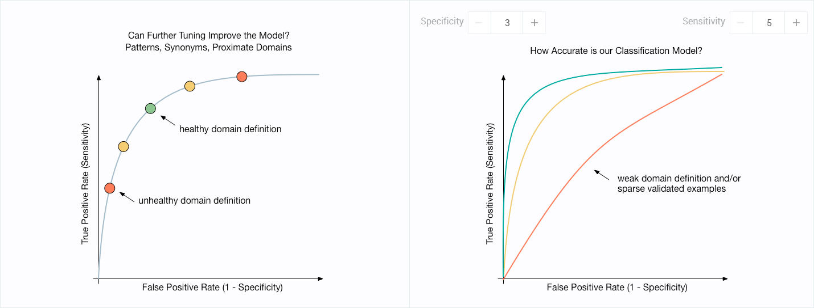

<!--
@license
Copyright (c) 2016 The Polymer Project Authors. All rights reserved.
This code may only be used under the BSD style license found at http://polymer.github.io/LICENSE.txt
The complete set of authors may be found at http://polymer.github.io/AUTHORS.txt
The complete set of contributors may be found at http://polymer.github.io/CONTRIBUTORS.txt
Code distributed by Google as part of the polymer project is also
subject to an additional IP rights grant found at http://polymer.github.io/PATENTS.txt
-->

<link rel="import" href="../../bower_components/polymer/polymer.html">
<link rel="import" href="../shared-styles.html">
<link rel="import" href="../../bower_components/mdb-metric-display/mdb-metric-display.html">
<link rel="import" href="../../bower_components/atom-table/atom-table.html">

<dom-module id="concept-details-health">
    <template>
        <style include="shared-styles">
             :host {
                display: block;
            }

             :host mdb-metric-display-container {
                margin-top: var(--standard-padding, 20px);
            }

             :host atom-table {
                margin-top: var(--standard-padding, 20px);
            }

             :host img {
                margin-top: var(--standard-padding, 20px);
                width: 100%;
            }
        </style>

        <div>
            <mdb-metric-display-container>
                <mdb-metric-display stat-value="0%" stat-description="Classification Accuracy"></mdb-metric-display>
                <mdb-metric-display stat-value="0%" stat-description="Predicted Columns"></mdb-metric-display>
                <mdb-metric-display stat-value="56" stat-description="Confirmed Columns"></mdb-metric-display>
            </mdb-metric-display-container>
            
            <atom-table items="{{items}}">

                <vaadin-grid-column>
                    <template class="header">
                        <vaadin-grid-sorter path="lastActionTaken">Last Action Taken</vaadin-grid-sorter>
                    </template>
                    <template>
                        {{item.lastActionTaken}}
                    </template>
                </vaadin-grid-column>
                <vaadin-grid-column>
                    <template class="header">
                        <vaadin-grid-sorter path="sufficientTimeElapsed">Sufficient Time Elapsed</vaadin-grid-sorter>
                    </template>
                    <template>
                        {{item.sufficientTimeElapsed}}
                    </template>
                </vaadin-grid-column>
                <vaadin-grid-column>
                    <template class="header">
                        <vaadin-grid-sorter path="efficacy">Efficacy</vaadin-grid-sorter>
                    </template>
                    <template>
                        {{item.efficacy}}
                    </template>
                </vaadin-grid-column>

            </atom-table>
        </div>
    </template>

    <script>
        Polymer({
            is: 'concept-details-health',

            properties: {
                items: {
                    type: Array,
                    value: [{
                        lastActionTaken: '5 examples added',
                        sufficientTimeElapsed: 'Yes',
                        efficacy: 'Health Improved 02 classification accuracy reduced by 3%'
                    }, {
                        lastActionTaken: '3 synonyms added',
                        sufficientTimeElapsed: 'Yes',
                        efficacy: 'Health Improved 04 classification accuracy reduced by 5%'
                    }, {
                        lastActionTaken: '3 patterns removed',
                        sufficientTimeElapsed: 'No (4 Hrs 55 Mins more)',
                        efficacy: 'Too early to tell'
                    }]
                }
            }
        });
    </script>
</dom-module>
